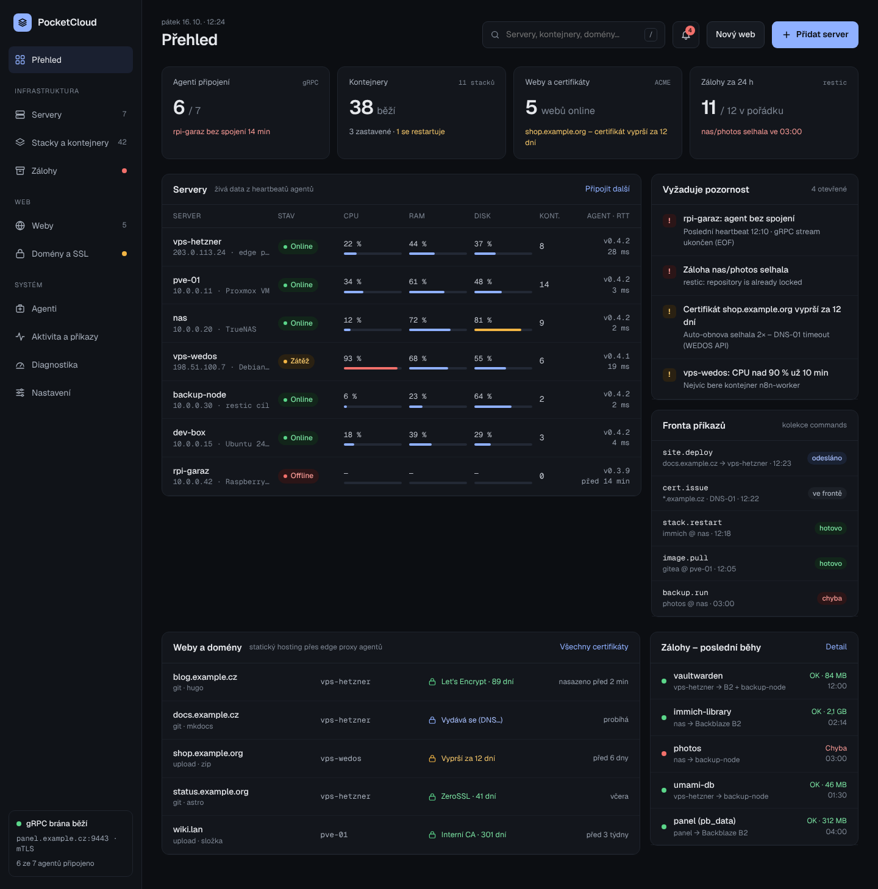
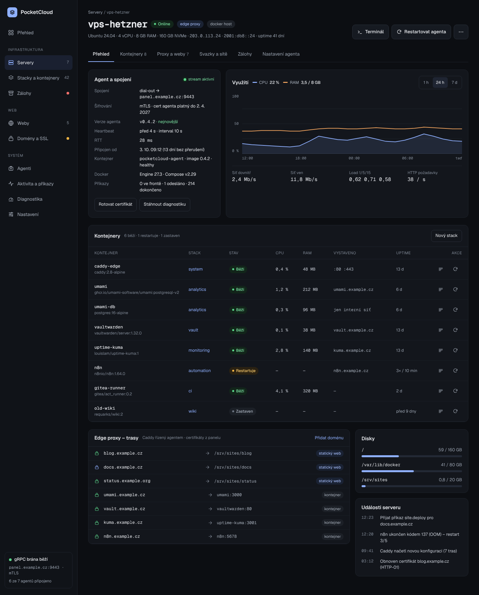
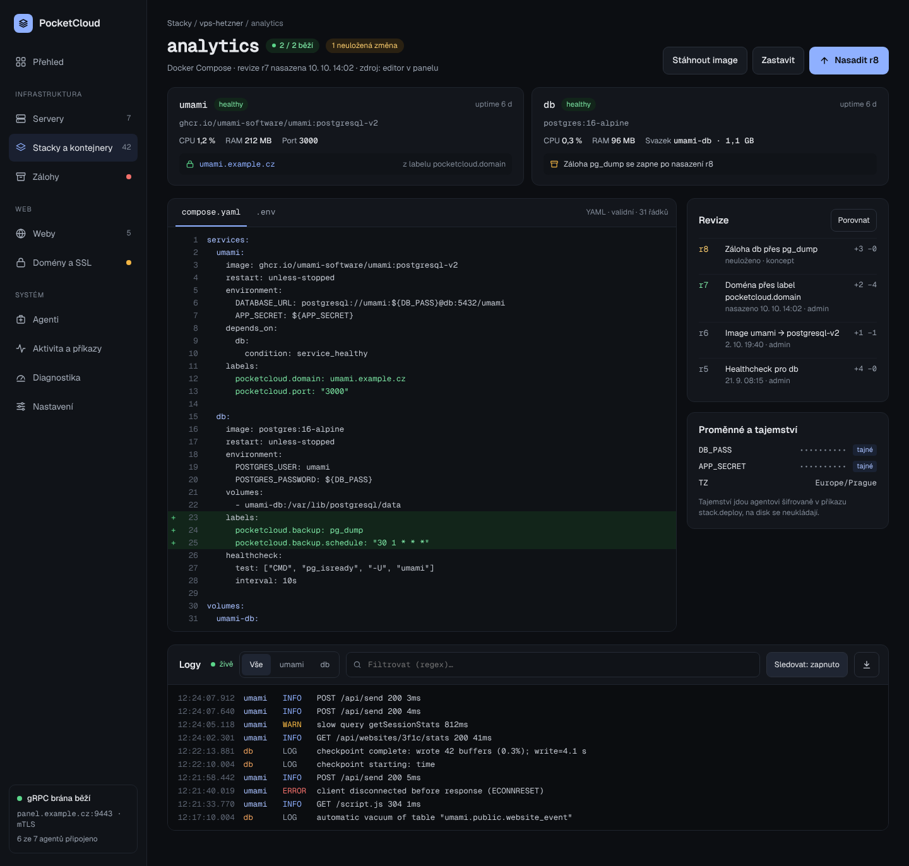
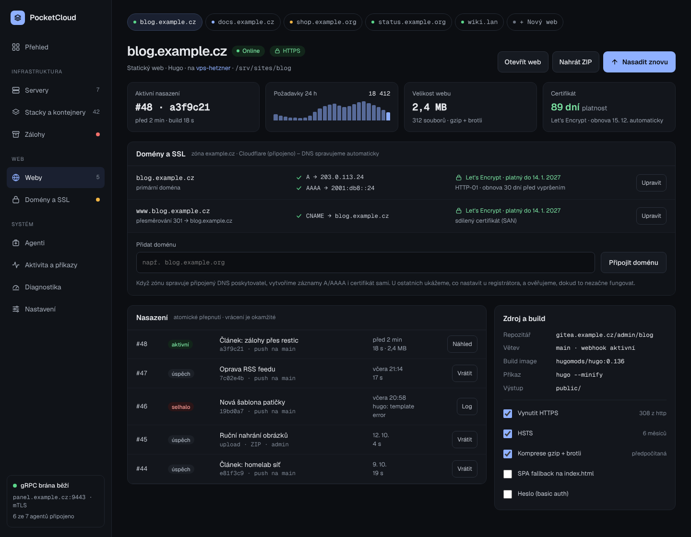
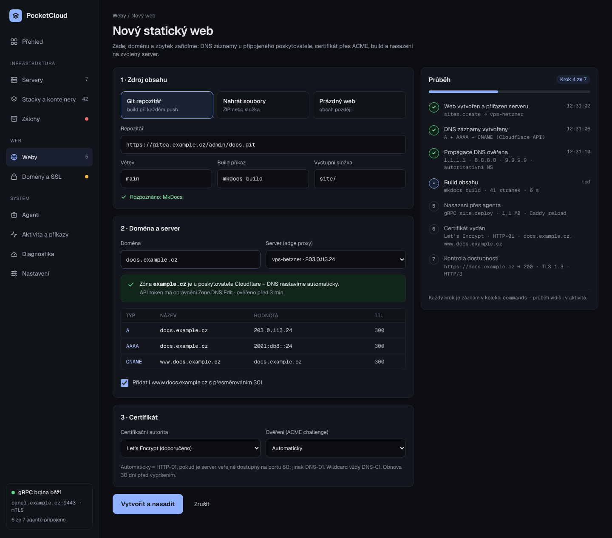
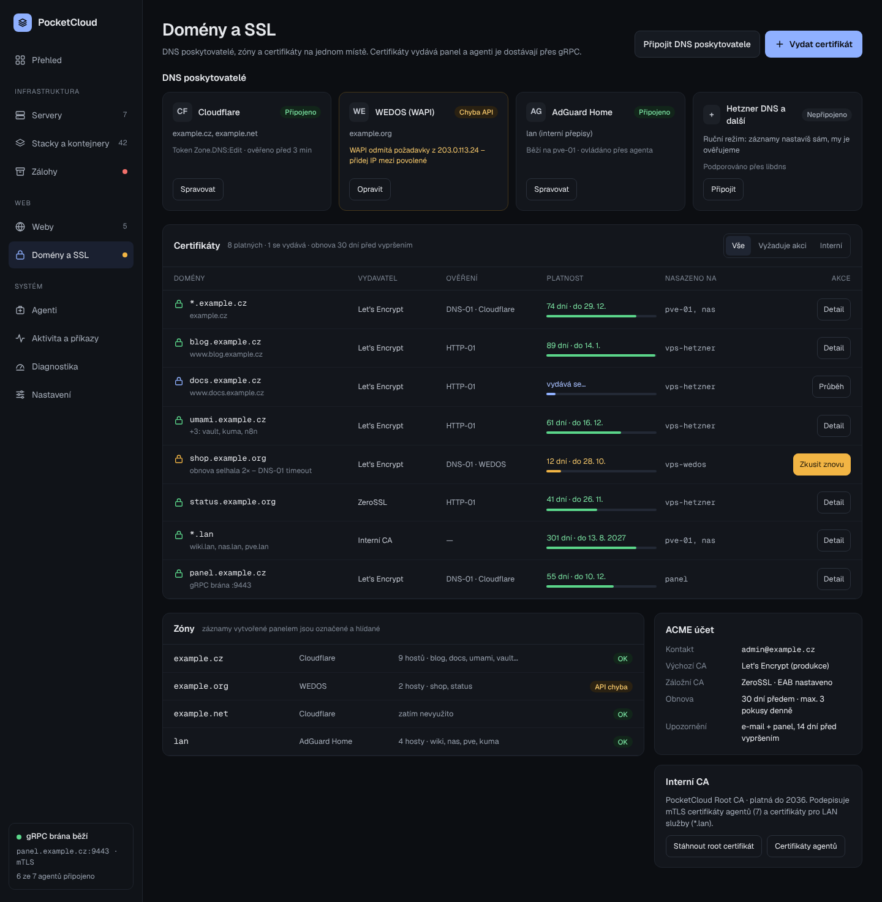
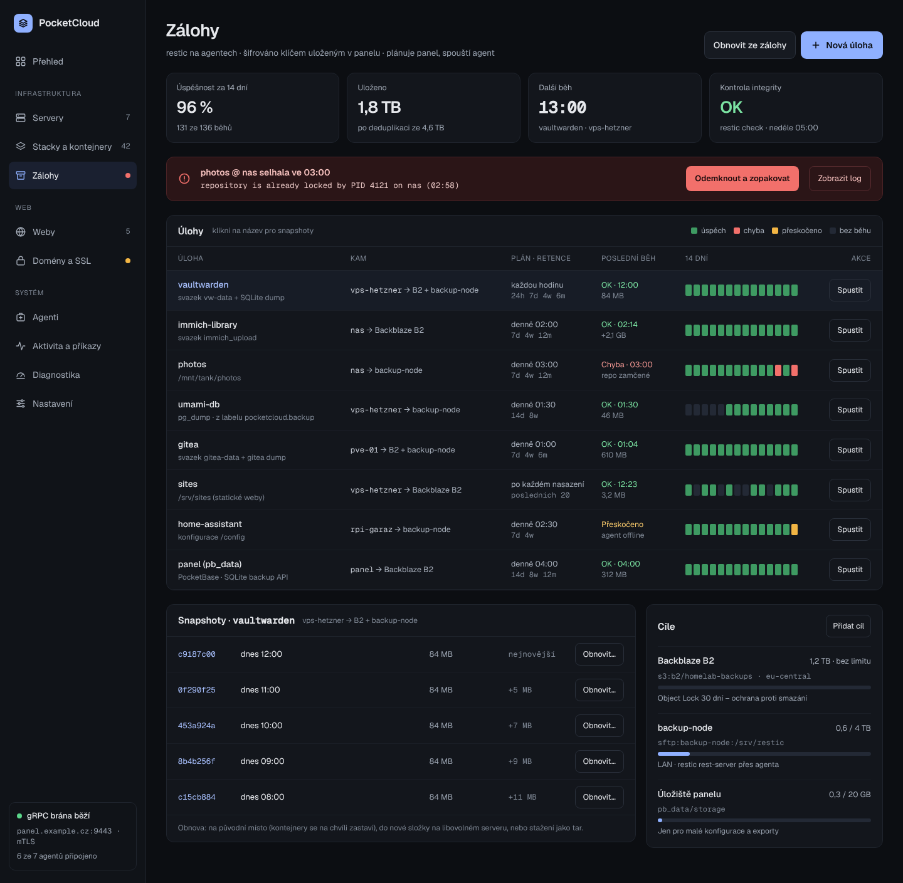
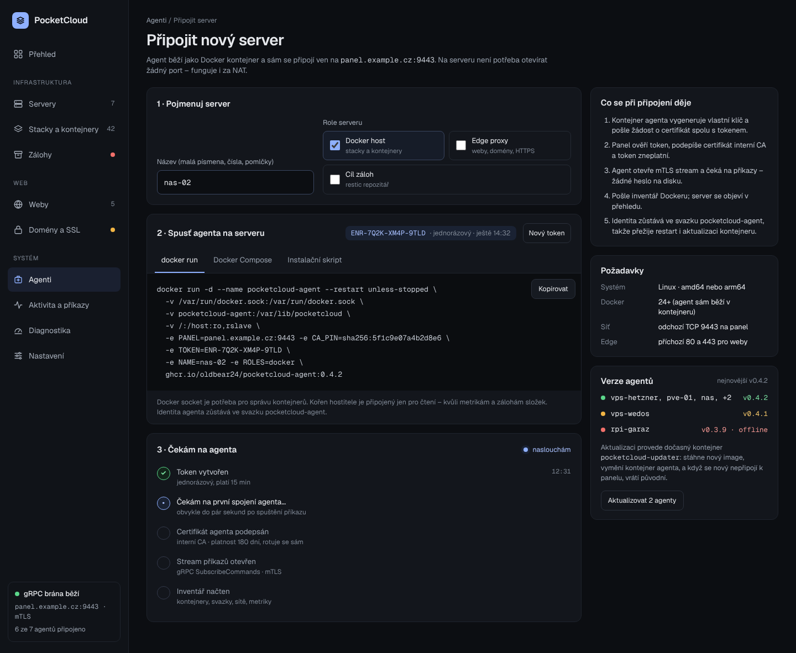
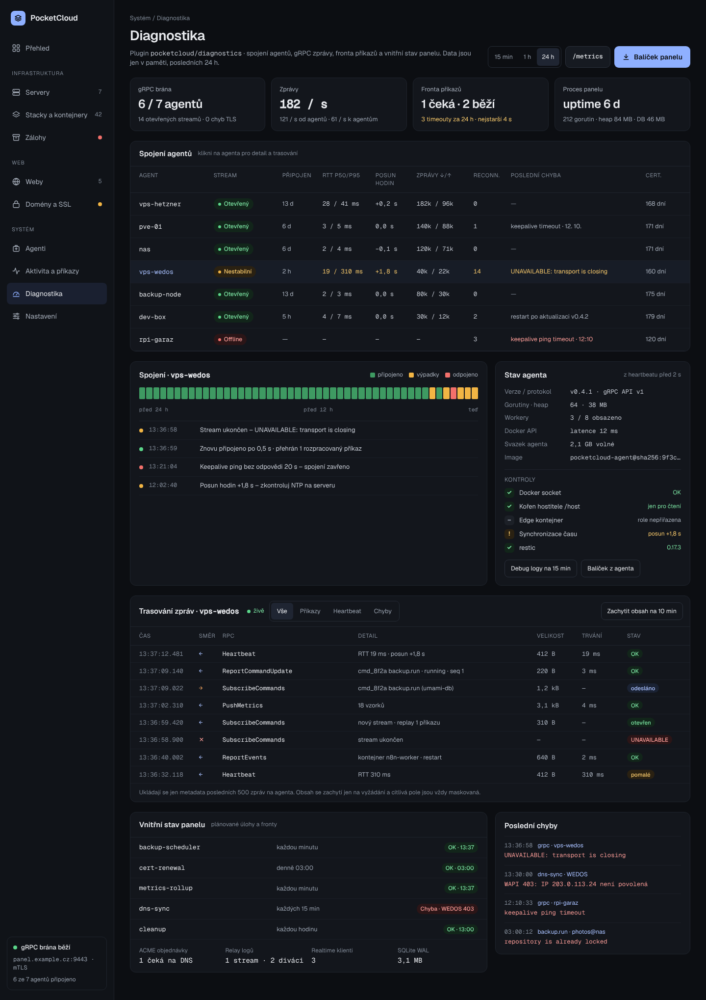

PocketCloud – UI previews
Static snapshots of the design. Screens link to each other like the prototype; interactive bits (filters, wizard progress) live in the source canvas.

Overview Agents, containers, sites and backups at a glance; servers with live load, alerts, command queue.
Server detail Agent connection (gRPC, mTLS, heartbeat), usage charts, containers, edge proxy routes, disks, events.
Compose stack Services, compose.yaml editor with unsaved changes, revisions, secrets and live logs.
Static site Deployments with instant rollback, domains with DNS and TLS state, build source and HTTPS options.
New site wizard Source, domain and certificate in one form; DNS zone detection and a live provisioning timeline.
Domains, DNS and certificates DNS providers, certificates with expiry and challenge type, zones, ACME account, internal CA.
Backups Backup jobs with 14-day history, failed run banner, snapshots for restore, backup targets.
Connect a server One-time enrollment token, Docker install command (docker run, Compose, script) and live connection checklist.
Diagnostics gRPC connection health per agent, agent state and self-checks, live message trace, panel internals.